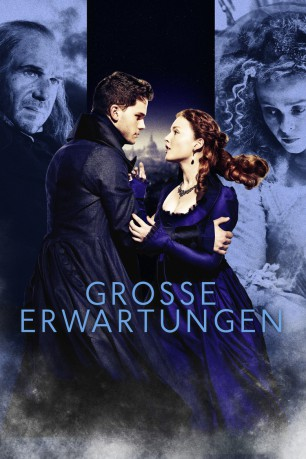
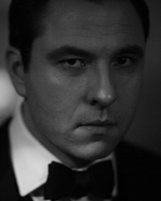
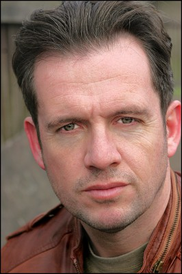
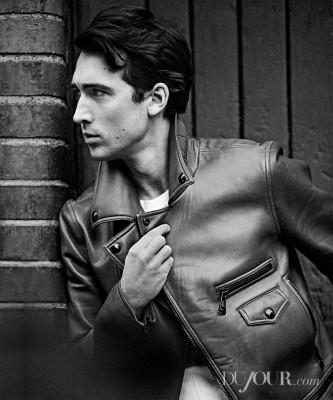
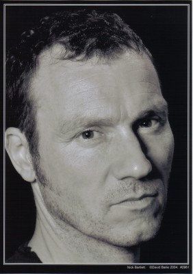
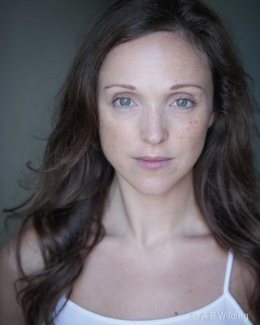

#6134 Große Erwartungen
Alternativ: Great Expectations
 
 IMDB-Wertung: 6.4 / 10
IMDB-Wertung: 6.4 / 10  Metascore: 0
Metascore: 0 
Der Vollwaise Pip lebt bei seiner armen Schwester und ihrem Mann Joe. Eines Tages hilft er dem flüchtigen Verbrecher Magwitch, der aber bald wieder eingefangen wird. Ein Jahr später wird Pip von der exzentrischen Dame Miss Havisham engagiert, ihrer Tocher Estella Gesellschaft zu leisten und er verliebt sich in die junge Dame aus gutem Hause. Zehn Jahre später gelangt Pip völlig überraschend und durch einen unbekannten Gönner in den Besitz eines großen Vermögens. Er zieht nach London, um das Leben eines Gentleman zu führen und trifft dort wieder mit Estella zusammen. Er offenbart ihr seine Liebe, doch sie möchte nichts davon wissen. Pip gibt die Hoffnung jedoch nicht auf. Seine großen Erwartungen werden jedoch gedämpft, als nach und nach die Wahrheit über sein Vermögen an die Oberfläche kommt.
Jahr: 2012
Dauer: 128 Minuten
FSK: 12
Land: England Studio: Senator FilmTonspuren:
Untertitel:
Auflösung: 720p (1280x544) Größe: 3072 MB
Genre: Drama, Liebe
Regisseur: Mike Newell
Drehbuch: Robert Garland
Soundtrack:
Darsteller:
 Ralph Fiennes als Magwitch
Ralph Fiennes als Magwitch Jason Flemyng als Joe Gargery
Jason Flemyng als Joe Gargery Sally Hawkins als Mrs. Joe
Sally Hawkins als Mrs. Joe-  David Walliams als Mr. Pumblechook
 Bernice Stegers als Mrs. Hubble
Bernice Stegers als Mrs. Hubble Ralph Ineson als Sergeant
Ralph Ineson als Sergeant-  Steve Morphew als Soldier
- Richard James als Cousin Raymond
 Helena Bonham Carter als Miss Havisham
Helena Bonham Carter als Miss Havisham- Bebe Cave als Young Biddy
- Pooky Quesnel als Sarah Pocket
- Kate Lock als Camilla Pocket
 Robbie Coltrane als Jaggers
Robbie Coltrane als Jaggers- Charlie Callaghan als Young Herbert
 Jeremy Irvine als Pip
Jeremy Irvine als Pip- Jessie Cave als Biddy
 Ewen Bremner als Wemmick
Ewen Bremner als Wemmick- Olly Alexander als Herbert Pocket
- Daniel Weyman als Arthur Havisham
-  Ben Lloyd-Hughes als Bentley Drummle
- Tom Ward-Thomas als Finch
- Sophie Rundle als Clara
- Tamzin Outhwaite als Molly
 Holliday Grainger als Estella
Holliday Grainger als Estella- Gary Arthurs als River Policeman
 Malcolm Tierney als Judge
Malcolm Tierney als Judge- Ronnie Fox als Bailiff One
-  Nick Bartlett als Bailiff Two
 Lasco Atkins als London Solicitor , uncredited
Lasco Atkins als London Solicitor , uncredited- Pablo Bubar als Estate Agent's Assistant , uncredited
- Nellie Burroughes als Mrs. Compeyson , uncredited
-  Leigh Daniels als Ballroom Dancer , uncredited
- Evelyn James als Blind Man's Sister , uncredited
- Tom Machell als Finch , uncredited
 Dale Mercer als Ballroom Dancer , uncredited
Dale Mercer als Ballroom Dancer , uncredited- Jimmy Pethrus als Mr. Jagger's Office Doorman , uncredited
- Toby Irvine als Young Pip
- William Ellis als Compeyson
- Tim Freeman als Mr. Wopsle
- Alan Rushton als Mr. Hubble
- Sheila Simpson als Mrs. Wopsle
- Helena Barlow als Young Estella
- Roberta Burton als Mrs. Raymond
- Joe Jameson als Bullfinch
- Harry Kershaw als Finch
- Edward Fisher als Finch
- Nick Pelly-Fry als Finch
- Andrew Rowe als Finch
- Duncan Leigh als Finch
- Frank Dunne als Aged P
Datei: X:\2012(G-M)\Große Erwartungen (2012, FSK12, 1280x544).mkv seit 05.05.2017
Festplatte: HD 2012(A-M)
 Es gibt insgesamt 112 Filme in der Gruppe '2012(G-M)'
Es gibt insgesamt 112 Filme in der Gruppe '2012(G-M)'